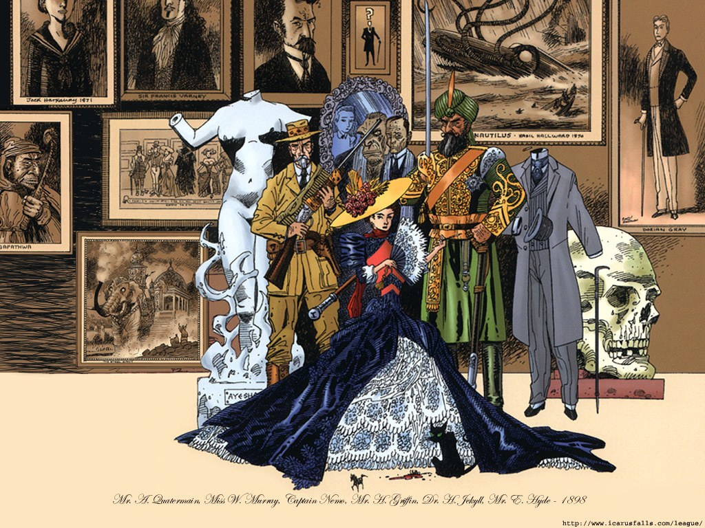

Week 14 Costanza’s Complaint... or asimov’s

“You couldn't figure out the ‘World's Theory’ for yourself? It's just common sense. Anybody knows, ya gotta keep your worlds apart.”
- George Costanza
WHEN WOrlds COllide
Tuesday, April 12, 2011
Week 14 Costanza’s Complaint... or asimov’s
Read League of Extraordinary Gentleman
For further reading
Read Woody Allen’s “Kugelmass Episode”
From Seinfeld
JERRY: You want to get something to eat first?
KRAMER: [ mumbling with full mouth ] No, I’m good.
GEORGE: I wonder if, ah, Susan ... (picks up the phone from the coffee
table, then decides not to call) No. I better just go. (claps hands)
heh. All right! See ya. (grabs his rain coat from the hook by the
door and rushes out)
KRAMER: There's nothing more pathetic, than a grown man, who’s afraid of
a woman. (voice get high-pitched for the last line)
JERRY: Hey, why don't cha ask Susan?
ELAINE: George's Susan?
JERRY: Yeah.
ELAINE: Yeah. Why not Susan. I should be friends with Susan. (smacks
her forehead with hand) Of course! Susan! Oh! OK, I’ll see you
guys. Huh. (rushes out the door.)
KRAMER: That's gunna be trouble.
JERRY: Why?
KRAMER: Jerry, don't you see? This world here, this is George's
sanctuary. If Susan comes into contact with this world, his world's
collide. You know what happens then?
(Kramer raises his hands into the air and slowly brings them together in
an explosion. He's holding some food in one hand, so when his hands
come into contact food flies all over)
KRAMER: Ka shha shha shha Pkooo (exploding sound)
-----
GEORGE: By the way, have you spoken to Elaine yet today?
JERRY: No why?
GEORGE: [sighs] She called Susan last night.
JERRY: Oh yeah, I know.
GEORGE: How do you know?
JERRY: Well it was my idea.
GEORGE: Your idea?
JERRY: Yeah.
GEORGE: Wha’d you do that for?
JERRY: She was looking for someone to go to the show with.
GEORGE: Well that was a really stupid thing! You know what's going to
happen now?
JERRY: World's collide. (points at George)
GEORGE: Whe ... Well yeah!
JERRY: Because this world is your sanctuary and if that world comes into
contact with --
GEORGE: YES! It Blows Up! So if you know that, what did you tell
Elaine for?
JERRY: I didn’t know. Kramer told me about the worlds.
GEORGE: You couldn't figure out the “World's Theory” for yourself? It's
just common sense. Anybody knows, ya gotta keep your worlds apart.
(gesturing with hands going outward)
JERRY: Yeah, I guess I slipped up.
(Kramer enters)
KRAMER: Hey.
GEORGE: Hey.
JERRY: Hey.
GEORGE: He knows the worlds theory.
KRAMER: What is it blowing up?
GEORGE: Ha! (grabs his coat and exits the apartment)